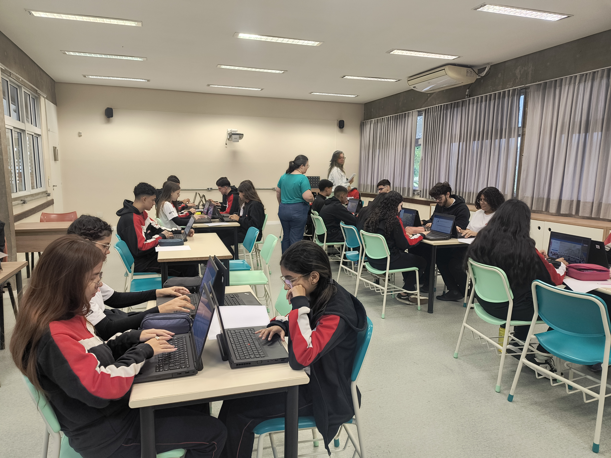
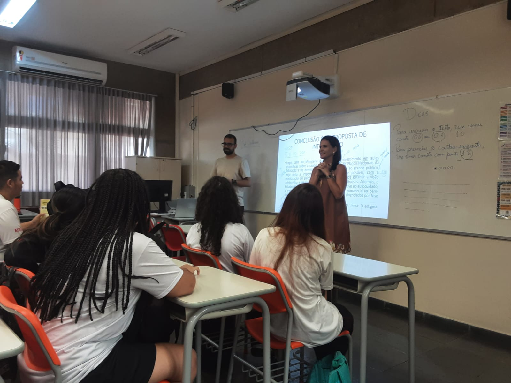
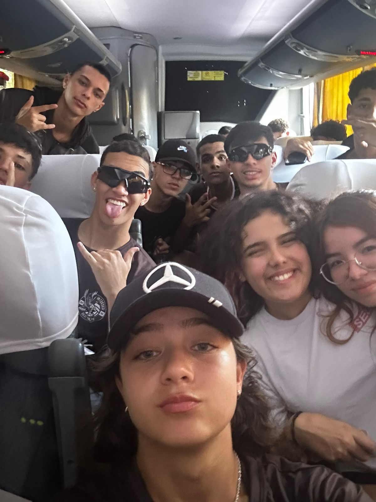
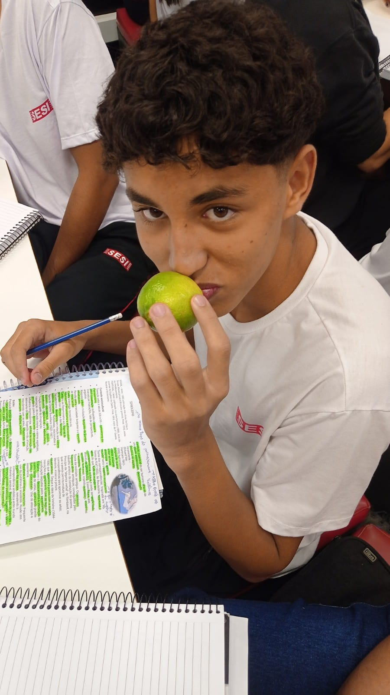

Conhecimentos - 3º Ano SESI Salto
Aqui você encontra registros de aprendizados, projetos e conquistas do nosso 3º Ano do SESI Salto.
Confira alguns dos nossos melhores momentos de aprendizado!

Visita técnica à TOTVS para conhecer o ambiente de trabalho e inovação.
Competências e Habilidades Desenvolvidas:
- Cognição: Resolução de problemas, pensamento crítico e criatividade.
- Interpessoal: Trabalho em equipe, comunicação e colaboração.
- Intrapessoal: Autonomia, autoconhecimento e responsabilidade.
- Cidadania Global: Compreensão do papel da tecnologia na sociedade e respeito à diversidade.
- Ambiente Escolar: Estimula a inovação e o interesse pelo futuro profissional, tornando o ambiente mais motivador.
Ida a TOTVS

Simulado preparatório para o ENEM, com ambiente realista e desafios de provas anteriores.
Competências e Habilidades Desenvolvidas:
- Cognição: Gestão do tempo, interpretação de textos e raciocínio lógico.
- Interpessoal: Compartilhamento de estratégias e apoio mútuo.
- Intrapessoal: Controle emocional e autoconfiança.
- Cidadania Global: Respeito às regras e ética durante avaliações.
- Ambiente Escolar: Promove disciplina e espírito de superação coletiva.
Desbrava ENEM: Simulado imersivo

Aulão especial focado em técnicas de redação para o ENEM, com dicas e bate-papo ao vivo.
Competências e Habilidades Desenvolvidas:
- Cognição: Argumentação, escrita e análise crítica.
- Interpessoal: Troca de ideias e respeito à opinião do outro.
- Intrapessoal: Expressão de sentimentos e autodesenvolvimento.
- Cidadania Global: Discussão de temas sociais e empatia.
- Ambiente Escolar: Incentiva o protagonismo e a participação ativa.
Aulão Enem: Aula de redação
 (1) (1).png)
Apresentação da festa junina organizada pelo 3º ano, "a última dança".
Competências e Habilidades Desenvolvidas:
- Cognição: Planejamento e organização de eventos.
- Interpessoal: Cooperação, liderança e respeito às diferenças.
- Intrapessoal: Senso de pertencimento e autoestima.
- Cidadania Global: Valorização da cultura e tradição.
- Ambiente Escolar: Fortalece vínculos e promove integração entre turmas.
Festa Junina: Arraiá terceirão

Participação em torneios esportivos entre unidades SESI, promovendo integração e espírito de equipe.
Competências e Habilidades Desenvolvidas:
- Cognição: Estratégia, tomada de decisão e foco.
- Interpessoal: Trabalho em equipe, respeito e liderança.
- Intrapessoal: Resiliência, disciplina e autossuperação.
- Cidadania Global: Espírito esportivo e respeito às diferenças.
- Ambiente Escolar: Estimula a convivência saudável e o respeito mútuo.
Copa Intersesi: Evento esportivo

Experimento sensorial, com o objetivo de estimular os sentimentos, para a escrita de um poema.
Competências e Habilidades Desenvolvidas:
- Cognição: Aprendizagem prática e contextualizada.
- Interpessoal: Comunicação e colaboração com colegas e profissionais.
- Intrapessoal: Curiosidade e iniciativa.
- Cidadania Global: Entendimento de realidades diferentes.
- Ambiente Escolar: Enriquece o repertório e amplia horizontes.
o que mandarem

Descrição da visita técnica ou atividade correspondente.
Competências e Habilidades Desenvolvidas:
- Cognição: Observação e análise crítica.
- Interpessoal: Troca de experiências e respeito mútuo.
- Intrapessoal: Autonomia e autoconfiança.
- Cidadania Global: Consciência social e ambiental.
- Ambiente Escolar: Incentiva o protagonismo estudantil.
o que mandarem 2

Descrição da visita técnica ou atividade correspondente.
Competências e Habilidades Desenvolvidas:
- Cognição: Aplicação de conhecimentos teóricos.
- Interpessoal: Colaboração e empatia.
- Intrapessoal: Reflexão e autodesenvolvimento.
- Cidadania Global: Visão crítica sobre o mundo.
- Ambiente Escolar: Aproxima teoria e prática, tornando o aprendizado mais significativo.
o que mandarem 3

Descrição da visita técnica ou atividade correspondente.
Competências e Habilidades Desenvolvidas:
- Cognição: Pesquisa e investigação.
- Interpessoal: Compartilhamento de descobertas.
- Intrapessoal: Motivação para aprender.
- Cidadania Global: Respeito à diversidade cultural e social.
- Ambiente Escolar: Estimula a curiosidade e o engajamento dos alunos.
o que mandarem 4